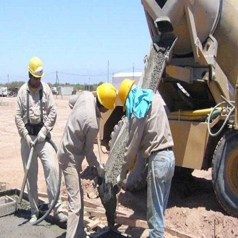
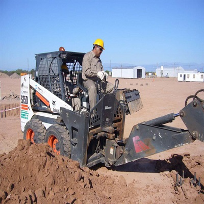
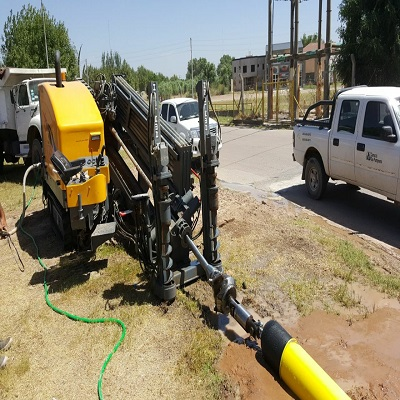
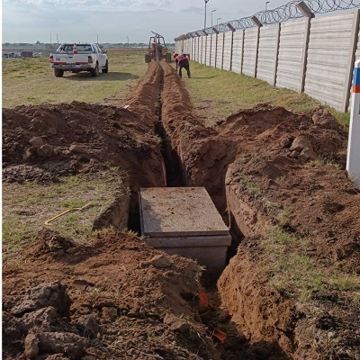

Nuestra Historia
Años de
Experiencia
TROOP S.R.L. nace sobre los deseos de forjar una empresa sólida, en la cual el compromiso y la honestidad son nuestra base fundamental para lograr los objetivos deseados. Hoy nos acercamos a ustedes con miras de seguir creciendo, y brindarles todos nuestros servicios.
Objetivos
Nuestro compromiso es mantener un sistema de Gestión de Calidad eficaz y adecuado, mejorando así nuestra posición en el mercado. No solo suministramos productos y servicios que cumplen con las especificaciones, sino que también superamos las expectativas de nuestros clientes a través de un enfoque de mejora continua.
- Promovemos la conciencia y la responsabilidad de calidad en todo el equipo, construyendo el éxito de TROOP S.R.L. a través de la colaboración de nuestros empleados.
- Impulsamos el desarrollo y la capacitación continuos del personal para garantizar su competencia en un entorno en evolución.
- Asumimos la responsabilidad de fijar objetivos de calidad y plazos anuales, asegurando su cumplimiento y alineación con los principios económicos de TROOP S.R.L.
{kind=link}
{kind=link}
{kind=link}